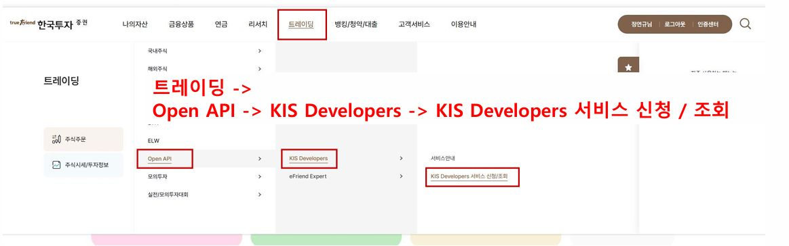
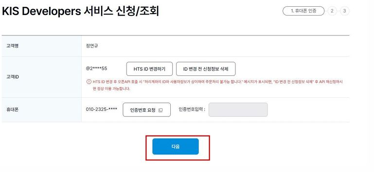
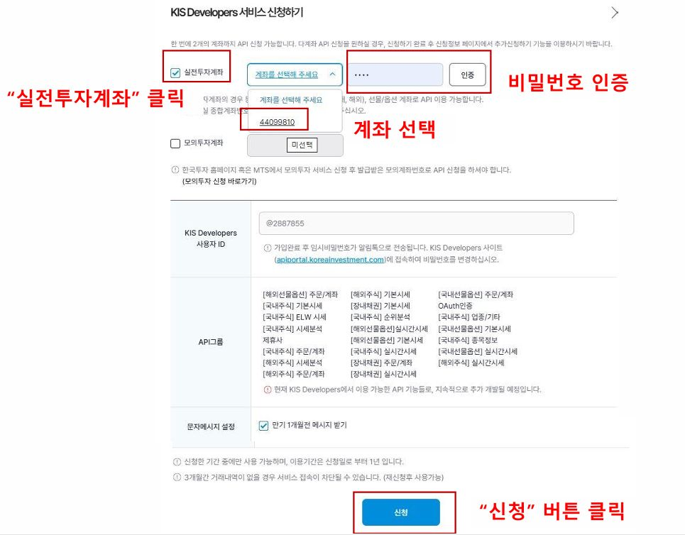
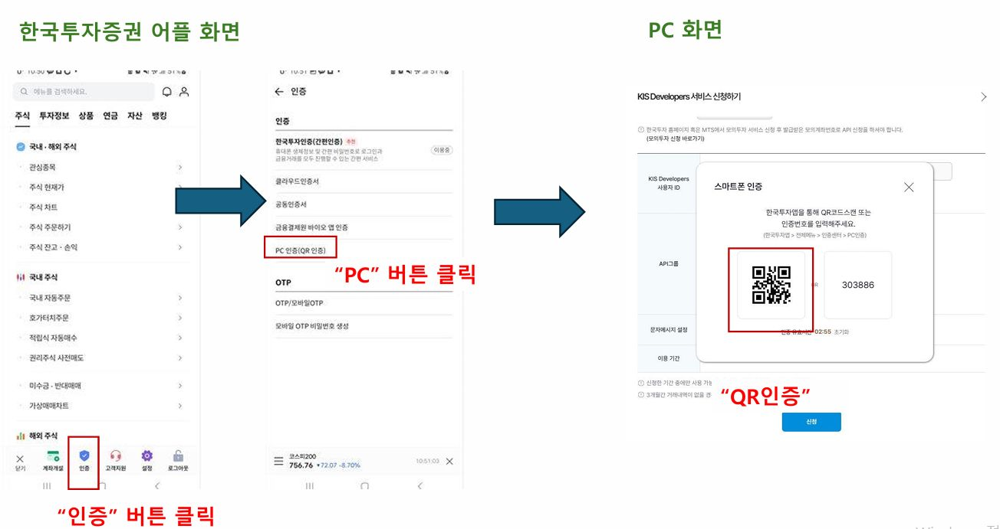
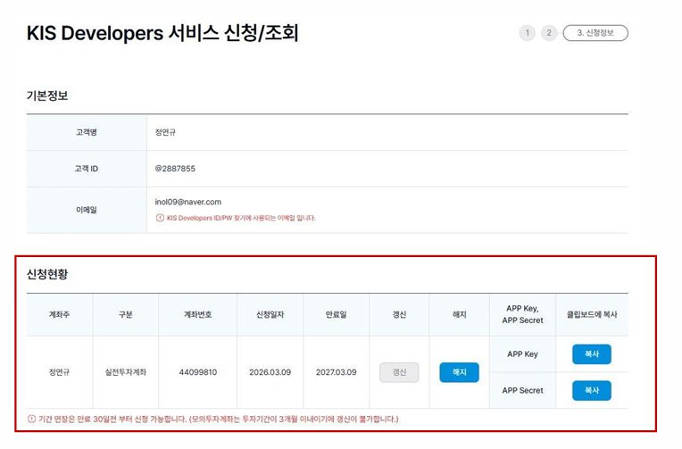
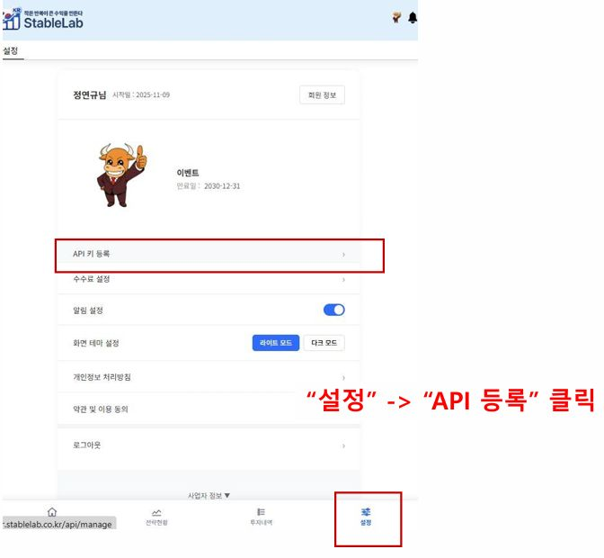
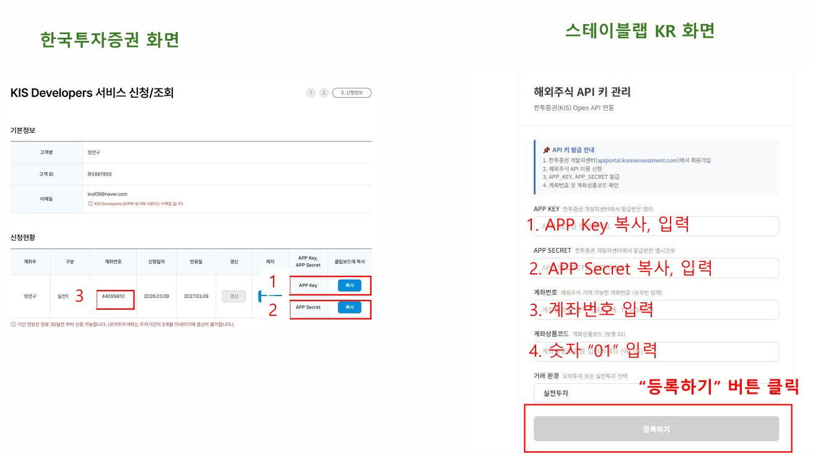
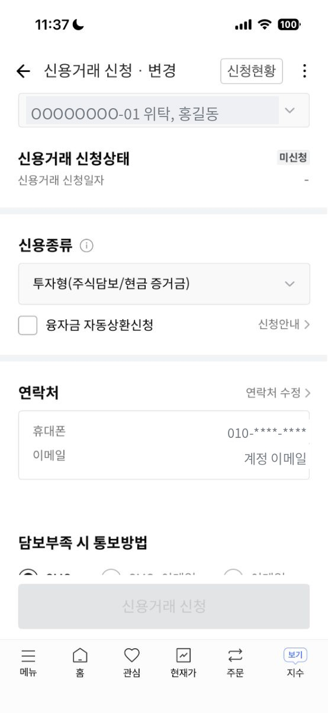
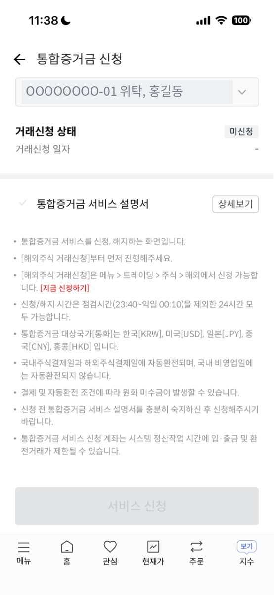

그리드센서 KR API Guide
한국투자증권 API 연동 방법
한국투자증권 APP Key를 발급받고
그리드센서KR에 등록하는 순서입니다.
STEP 1
한국투자증권 홈페이지 접속
한국투자증권 홈페이지에 접속합니다.
STEP 2
KIS Developers 서비스 신청 / 조회 클릭
아래 경로를 따라
[KIS Developers 서비스 신청/조회]를 클릭합니다.

STEP 3
휴대폰 인증
가입한 휴대폰으로 인증번호 입력 후
다음 버튼을 클릭합니다.

STEP 4
KIS Developers 서비스 신청하기
아래 순서에 따라 API를 신청하세요.

STEP 5
QR 인증
QR 인증 화면이 나오면 한국투자증권 어플로 인증을 완료해주세요.

STEP 6
한국투자증권 APP키 생성 완료
APP키 생성이 완료되었습니다.
화면을 켜놓고 그리드센서KR로 이동하여 키 연동 작업을 마무리합니다.

STEP 7
그리드센서KR API키 등록 메뉴 접속
그리드센서KR 접속 후 아래 경로에 따라
API 키 등록 메뉴를 클릭합니다.
설정 → API 키 등록

STEP 8
키 등록 하기
아래 4가지 항목을 입력하고
등록하기 버튼을 클릭해주세요.

✅ 연동 성공
이제 여러분의 한국투자증권 계좌와 그리드센서KR이 하나로 연결되어 자동 매매를 시작할 준비가 되었습니다.
✅ 잠깐!
그리드센서 KR, US는 한국투자증권 API 연동을 한 번만 하면 둘 다 이용할 수 있습니다.
전략 세팅 전 필수 점검
원화 입금 · 환전 · 계좌 상태 확인
API 연동을 마쳤다면,
전략을 만들기 전에 아래 항목을 반드시 확인하십시오.
1-2
원화 입금 및 환전
달러로 환전해 두지 않으면 매수·매도가 진행되지 않습니다.
1-2 · 반드시 확인
환전은 US 전략 세팅 「전에」 미리 해두십시오
그리드센서 US는 달러로 주문을 냅니다. 계좌에 원화만 있으면 전략은 만들어지지만 매수가 체결되지 않습니다. “세팅했는데 아무 일도 안 일어난다”는 문의의 대표적인 원인입니다.
회차 수만큼의 달러를 미리 확보해 두십시오. 예를 들어 50회차 전략을 돌린다면 50회차 전부가 체결됐을 때 필요한 금액이 달러로 있어야 합니다. 소요예수금은 계산기(6-10)로 미리 확인하실 수 있습니다.
통합증거금을 해지하셨으므로 자동환전이 되지 않습니다. 의도한 설계입니다(1-3 참조) — 대신 본인이 직접 환전해 두셔야 합니다.
환전은 거래 시간과 환율 우대를 확인하고 하십시오. 증권사별로 환전 수수료(스프레드)가 다릅니다.
1-3
신용거래 · 통합증거금 「미신청」 확인
두 가지 모두 「미신청」 상태여야 합니다.
새로 계좌를 만드셨다면 대부분 이미 미신청입니다. 확인만 하고 넘어가시면 됩니다. 이미 신청되어 있다면 해지하셔야 합니다. 두 항목은 해지해야 하는 이유가 서로 다릅니다. 각각 이해하고 넘어가십시오.
① 신용거래
지금 가진 자산 밖으로 투자가 나가지 않게 막아두는 장치
② 통합증거금
KR 자산과 US 자산을 따로 관리하기 위한 분리
1-3 ①
신용거래 — 「미신청」이어야 합니다
확인 방법 — 한국투자증권 앱
| 표시 | 상태 | 해야 할 일 |
|---|---|---|
| 미신청 | 정상 | 그대로 두십시오. 아무것도 하지 마십시오 |
| 신청 (신청일자 표시됨) | 조치 필요 | 해지하십시오 |

1-3 ①
왜 신용을 쓰지 않는가
이 화면에는 [신용거래 신청] 버튼이 있습니다. 누르지 마십시오. 우리는 신청하러 온 게 아니라 확인하러 온 것입니다.
화면에 보이는 「신용종류」(투자형 · 주식담보/현금 증거금)나 「융자금 자동상환신청」 체크박스도 건드리지 마십시오. 신청을 전제로 한 항목들입니다.
지금 가진 자산 밖으로는 투자가 나가지 않게 막아두는 장치입니다.
신용은 내 돈이 아닌 돈입니다. 회차 설계의 전제는 이것입니다 — “내가 정한 하단까지 내려가면 매수가 멈추고, 그래서 최대 투입액이 확정된다.”
신용이 열려 있으면 그 상한선 자체가 무의미해집니다. 내가 계산한 금액을 넘어 돈이 들어갈 수 있고, 담보가 부족해지면 반대매매를 당합니다. 빌린 돈으로 사서 반대매매를 당하는 것 — 이것이 손실이 나는 가장 흔한 경로입니다.
1-3 ②
통합증거금 — 「미신청」이어야 합니다
확인 방법 — 한국투자증권 앱
| 표시 | 상태 | 해야 할 일 |
|---|---|---|
| 미신청 | 정상 | 그대로 두십시오 |
| 신청 (신청일자 표시됨) | 조치 필요 | 해지하십시오 |
하단 [서비스 신청] 버튼을 누르지 마십시오. 확인만 하고 뒤로 가시면 됩니다.
이 화면은 신청과 해지를 모두 하는 화면입니다. 이미 신청된 상태라면 같은 화면에서 해지하실 수 있습니다. 신청·해지는 점검시간(23:40~익일 00:10)을 제외한 24시간 가능합니다.

1-3 ②
왜 통합증거금을 쓰지 않는가
국내주식(KR) 자산과 미국주식(US) 자산을 따로 관리하기 위해서입니다.
통합증거금은 원화와 외화를 하나로 묶어 쓰는 서비스입니다. 대상 통화는 한국(KRW)·미국(USD)·일본(JPY)·중국(CNY)·홍콩(HKD)이고, 국내주식 결제일과 해외주식 결제일에 자동으로 환전이 일어납니다.
편리해 보이지만, 그리드센서는 KR과 US를 별도 전략으로 운영합니다. 자산이 묶여 있으면 이런 일이 생깁니다.
KR 전략이 매수에 들어갔는데 US 쪽 예수금까지 같이 빠져나간다
각 시장에 얼마를 배정했는지 내가 계산한 예산 경계가 무너진다
자동환전 조건에 따라 원화 미수금이 발생할 수 있다 (한투 안내 문구)
어느 쪽에서 얼마가 나갔는지 추적이 어려워진다
KR 예산은 KR 안에서, US 예산은 US 안에서만 돌게 하십시오. 시장별로 자산을 분리해 두어야 각 전략의 최대 투입액이 계산한 대로 지켜집니다.